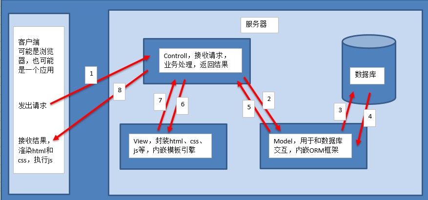

Django简介
Django: 发音为 [ `dʒæŋɡəʊ ]. 名称来源于比利时爵士音乐家 Django ReinhardtPython语言写的开源web开发框架, 发布于2005年7月.Django的主要目的是简便、快速的开发数据库驱动的网站.Django强调代码复用, 多个组件可以很方便的以“插件”形式服务于整个框架. 有许多功能强大的第三方插件.Django遵循MVC设计模式. 但是有一个专有名词 ：MVT- Django官方网站
- Django源码-GitHub
- Django1.8.2官方中文文档
MVC介绍
MVC全拼为Model-View-ControllerMVC核心思想 : 解耦- 让不同的模块之间降低耦合, 增强代码的可扩展性和可移植性, 实现更好的向后续版本的兼容
- 开发原则 : 高内聚, 低耦合
MVC解析M全拼为Model, 主要封装对数据库层的访问, 内嵌ORM框架, 实现面向对象的编程来操作数据库.V全拼为View, 用于封装结果, 内嵌了模板引擎, 实现动态展示数据.C全拼为Controller, 用于接收GET或POST请求, 处理业务逻辑, 与Model和View交互, 返回结果.
- 当前主流的开发语言如
Java、PHP、Python、...中都有MVC设计模式.

MVT介绍
MVT全拼为Model-View-TemplateMVT核心思想 : 解耦MVT解析M (模型)全拼为Model, 与MVC中的M功能相同, 负责数据处理, 内嵌了ORM框架.V (视图)全拼为View, 与MVC中的C功能相同, 接收HttpRequest, 业务处理，返回HttpResponse.T (模板)全拼为Template, 与MVC中的V功能相同, 负责封装构造要返回的html, 内嵌了模板引擎.
MVT和MVC差异就在于黑箭头标识出来的部分.

总结
学习 Django, 重点就是研究
Model-View-Template三个模块间如何协同工作及各自模块的代码如何编写。
补充
设计模式
- 设计模式：是一套被反复使用、多数人知晓的、经过分类的、代码设计经验的总结。
- 使用设计模式的目的：为了代码可重用性、让代码更容易被他人理解、保证代码可靠性。
- 设计模式使代码编写真正工程化。
- 设计模式是软件工程的基石脉络，如同大厦的结构一样。
高内聚，低耦合
耦合性：指软件系统结构中各模块间相互联系紧密程度的一种度量。
- 模块之间联系越紧密，其耦合性就越强，模块的独立性则越差。
- 模块间耦合高低取决于模块间接口的复杂性、调用的方式及传递的信息
内聚性：指模块的功能强度的度量，即一个模块内部各个元素彼此结合的紧密程度的度量。
- 若一个模块内各元素（语名之间、程序段之间）联系的越紧密，则它的内聚性就越高。